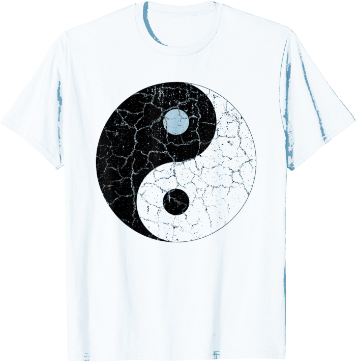

Chinese Yin Yang Symbol T Shirt with Cracked Distressed Look
- Solid colors: 100% Cotton; Heather Grey: 90% Cotton, 10% Polyester; All Other Heathers: 50% Cotton, 50% Polyester
- Imported
- Machine Wash
- In Chinese Taoist philosophy, yin yang (sometimes written as yin-yang or yin and yang) describe how opposites may actually be complementary.
- So if you, or someone awesome you know, likes yin yangs - either the concept or just the symbol - this creative and fun tee is a must!
- Lightweight, Classic fit, Double-needle sleeve and bottom hem
- Buy on Amazon